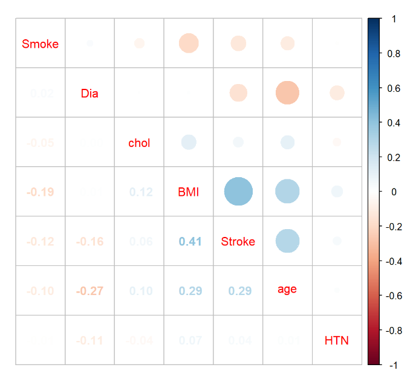

JACKSON HEART STUDY - SURVEILLANCE ANALYSIS
STA6257: Advanced Statistical Modeling
Elizabeth Arthur & Emily Rogers
Background
Causes of Death
According to the Centers for Disease Control in 2020, cardiovascular disease was the leading cause of death in the United States and cerebrovascular diseases (stroke) are ranked fifth.
\tiny Centers\ for\ Disease\ Control\ and\ Prevention>FastStats\ Homepage>Life\ Stages\ and\ Populations>Deaths\ (September\ 6, 2022)
Jackson Heart Study
\tiny Centers\ for\ Disease\ Control\ and\ Prevention>FastStats\ Homepage>Life\ Stages\ and\ Populations>Deaths\ (September\ 6, 2022)
\tiny Keku\ et\ al.\ (2004)
\tiny Sempos\ et\ al.\ (1999)
Stroke Risk Factors
HEALTH
- High blood pressure
- High cholesterol
- Previous stroke
- Heart disease
- Diabetes
- Obesity
- Sickle cell disease
- Family history
- Age (increases risk)
- Sex
- Race/ethnicity
BEHAVIORAL
- Poor diet
- Minimal physical activity
- Excessive alcohol use
- Tobacco use
\tiny Centers\ for\ Disease\ Control\ and\ Prevention> Stroke Home>Know\ Your\ Risk\ for\ Stroke\ (April\ 12, 2022)
Data Exploration
| Censored (N=2245) |
Hemorrhagic Stroke (N=1) |
Ischemic Stroke (N=42) |
Overall (N=2288) |
|
|---|---|---|---|---|
| Age in Years | ||||
| Mean (SD) | 53.8 (11.7) | 59.2 (NA) | 63.8 (10.4) | 54.0 (11.7) |
| Median [Min, Max] | 53.6 [22.9, 83.2] | 59.2 [59.2, 59.2] | 65.3 [36.6, 83.1] | 53.9 [22.9, 83.2] |
| Hypertensive Status | ||||
| Normal/Pre-Hypertensive | 1100 (49.0%) | 0 (0%) | 12 (28.6%) | 1112 (48.6%) |
| Hypertensive | 1145 (51.0%) | 1 (100%) | 30 (71.4%) | 1176 (51.4%) |
| Diabetes Categorization | ||||
| Non-Diabetic | 1086 (48.4%) | 0 (0%) | 7 (16.7%) | 1093 (47.8%) |
| Pre-Diabetic | 792 (35.3%) | 1 (100%) | 18 (42.9%) | 811 (35.4%) |
| Diabetic | 367 (16.3%) | 0 (0%) | 17 (40.5%) | 384 (16.8%) |
| Smoking Status | ||||
| Current Smoker | 275 (12.2%) | 0 (0%) | 9 (21.4%) | 284 (12.4%) |
| Never Smoked/Quit + 12 months | 1970 (87.8%) | 1 (100%) | 33 (78.6%) | 2004 (87.6%) |
| AHA BMI Categorization | ||||
| Obese | 1211 (53.9%) | 0 (0%) | 22 (52.4%) | 1233 (53.9%) |
| Overweight | 743 (33.1%) | 1 (100%) | 15 (35.7%) | 759 (33.2%) |
| Normal Weight | 291 (13.0%) | 0 (0%) | 5 (11.9%) | 296 (12.9%) |
| AHA Total Cholesterol Categorization | ||||
| Poor Health | 307 (13.7%) | 0 (0%) | 10 (23.8%) | 317 (13.9%) |
| Intermediate Health | 899 (40.0%) | 0 (0%) | 21 (50.0%) | 920 (40.2%) |
| Ideal Health | 1039 (46.3%) | 1 (100%) | 11 (26.2%) | 1051 (45.9%) |
Survival Analysis
Survival Analysis - General
Collection of data
- Multiple points in time
- Throughout the disease progression
Statistical Method
Determines time to an event of interest
- Disease recurrence
- Relapse-free time interval
- Remission
- Death
Frequently used in the medical field
\tiny Linden,\ et\ al.\ (2004)
Survival Analysis - General (cont…)
- Data Attributes
- Infrequent normal distribution
- Typically a skewed distribution
- Majority of events occur early and then taper
- Focus
- Kaplan-Meier Plots (K-M)
- Cox Proportional Hazards
NOTE: There are also other methods that are not discussed in this presentation.
\tiny Clark,\ Bradburn,\ Love\ \&\ Altman,\ (2003)
Survival Analysis - Definitions
Right censoring: Event occurs beyond the end of the follow-up time/study
Left censoring: Event occurred prior to the first follow-up
Interval censoring: Patients come in and out of observation
Noninformative censoring: Patient is lost from follow-up but is just as likely to have a subsequent event as the remaining study participants.
Informative censoring: Patient withdraws from study, has a decline in clinical condition, or drug toxicity
\tiny Clark,\ Bradburn,\ Love\ \&\ Altman,\ (2003)
Survival Analysis - Definitions (cont…)
RELATED PROBABLITITY FUNCTIONS
- Survivor:
- Likelihood of event NOT having occurred at a specific time
- Denoted S(t)
- Hazard:
- Likelihood of an event occurring at a specific time
- Denoted h(t) or \lambda (t)
\tiny Clark,\ Bradburn,\ Love\ \&\ Altman,\ (2003)
Survival Analysis - Kaplan-Meier (K-M) Survival Estimate
S(t_j) = S(t_{j-1})(1 - \frac{d_j}{n_j}) Where:
- S(t_{j-1}) Is the probability of not having a stroke at time t_{j-1}
- n_j Is the number of participants stroke free just before t_j, n_j
- d_j Is the number of events (strokes) at t_j
- Univariate
- Straightforward
- Assumption
- All events occur independently of each other
\tiny Clark,\ Bradburn,\ Love\ \&\ Altman,\ (2003)
Survival Analysis - Kaplan-Meier (K-M) Survival Estimate (cont…)
Statistic
Estimation for each patient surviving at the START of the observation period as a PROBABILITY of surviving to the end of each observation period
Each probability is a “step function” and the value changes only at each event time
Cumulative survival probability is calculated by multiplying the probabilities of surviving from one interval to the next.
\tiny Clark,\ Bradburn,\ Love\ \&\ Altman,\ (2003)
Survival Analysis - Cox Proportional Hazards (PH)
h(t) = h_0(t) * e^{b_1x_1 + b_2x_2 + … + b_px_p}
Where:
- h(t) Is the hazard function
- x_1, x_2, … x_p Is the set of variables used in the hazard function
- b_1, b_2 … b_p Is the coefficient, which determines the effect of each variable.
- Multivariate
- Semi-parametric approach
- No statistical distribution assumption
- Similar to other regression models
- Outcome variable related to one or more independent variables
- Allows to control for censored cases/effects
- “Describes the relation between the event incident, as expressed by the hazard function and a set of covariates”
\tiny Clark,\ Bradburn,\ Love\ \&\ Altman,\ (2003)
\tiny Linden,\ et\ al.\ (2004)
Survival Analysis - Assumptions
Assumption: All events occur independently of each other.

Assumption: Proportional hazards exist (For Cox PH Only)
chisq df p
age 0.9179 1 0.34
htn 2.3352 1 0.13
diab3cat 0.2547 1 0.61
idealhealthsmk 0.6421 1 0.42
bmi3cat 0.2916 1 0.59
totchol3cat 0.0972 1 0.76
GLOBAL 5.7207 6 0.46All p-values are greater than \alpha = 0.05. Therefore, the assumption holds true.
\tiny Clark,\ Bradburn,\ Love\ \&\ Altman,\ (2003)
\tiny Zabor\ (October\ 19, 2022)
Analysis & Results
Survival Object
Created from Variables
- Calculated Time
- Stroke (if the event took place)
Creates Vector
[1] 3362+ 694 3295+ 3240+ 3317+Diabetes
Graph illustrates the probability of NOT having a stroke (the event):
- Non-Diabetic (0 - pink): < 1% decrease over the length of the study
- Pre-Diabetic (1 - green): approximately 2.5% decrease over the length of the study
- Diabetic (2 - blue): approximately 4.5% decrease over the length of the study

\tiny Zabor\ (October\ 19, 2022)
K-M Survival Estimate Plot

Hazard Curve

Cox PH
| Characteristic | HR1 | 95% CI1 | p-value |
|---|---|---|---|
| Age in Years | 1.08 | 1.04, 1.12 | <0.001 |
| Hypertensive Status | 1.10 | 0.54, 2.23 | 0.8 |
| Diabetes Categorization | 2.12 | 1.37, 3.27 | <0.001 |
| Smoking Status | 0.37 | 0.17, 0.81 | 0.012 |
| AHA BMI Categorization | 1.18 | 0.74, 1.87 | 0.5 |
| AHA Total Cholesterol Categorization | 0.71 | 0.46, 1.08 | 0.11 |
| 1 HR = Hazard Ratio, CI = Confidence Interval | |||
- HR < 1 indicates a reduced hazard of stroke
- HR > 1 indicates an increased hazard of stroke
Age Increase in age -> increase in hazard of stroke
Hypertension Hypertensive -> increase in hazard of stroke
Diabetes Pre-Diabetic/Diabetic -> increase in hazard of stroke
\tiny Reference\ group\ switches\ to\ least\ healthy\ status
Smoking Non-smoker -> decrease in hazard of stroke
BMI
Cholesterol Healthy Cholesterol level -> decrease in hazard of stroke
\tiny (Zabor)
References
- Centers for Disease Control and Prevention > FastStats Homepage > Life Stages and Populations > Deaths (September 6, 2022). Retrieved November 2, 2022, from https://www.cdc.gov/nchs/fastats/leading-causes-of-death.htm
- Centers for Disease Control and Prevention > Stroke Home > Know Your Risk for Stroke (April 12, 2022). Retrieved November 2, 2022, from https://www.cdc.gov/stroke/risk_factors.htm. https://www.rdocumentation.org
- Clark, T.G., Bradburn, M.J., Love, S.B., & Altman, D.G. (2003). Survival Analysis Part I: Basic concepts and first analyses. Br J Cancer 89, 232–238. https://doi.org/10.1038/sj.bjc.6601118
- Keku, E., Rosamond, W. D. Taylor, H. A., Garrison, R. J., Wyatt, S. B., Richard, M., Campbell Jenkins, B.W., Reeves, L. & Sarpong. D.F. (2004). Cardiovascular disease event classification in the Jackson Heart Study: methods and procedures. Ethnicity & Disease, 15(4 Suppl 6), S6-70. https://pubmed.ncbi.nlm.nih.gov/16317987
- Linden, A., Adams, J. & Roberts, N. (2004). Evaluating Disease Management Program Effectiveness: An Introduction to Survival Analysis. Disease management : DM. 7. 180-90. 10.1089/1093507042264818.
- quarto (n.d.). Retrieved November 17, 2022. https://quarto.org/
- RDocumentation (n.d.). Retrieved October 9, 2022. https://www.rdocumentation.org/
- Sempos, C.T., Bild D.E., & Manolio, T.A. (1999) Overview of the Jackson Heart Study: A Study of Cardiovascular Diseases in African American Men and Women, The American Journal of the Medical Sciences, 317(3),142-146, ISSN 0002-9629, https://doi.org/10.1016/S0002-9629(15)40495-1.
- Zabor, E. C. (October 19,2022). Survival Analysis in R. Retrieved October 28, 2022, from https://www.emilyzabor.com/tutorials/survival_analysis_in_r_tutorial.htm